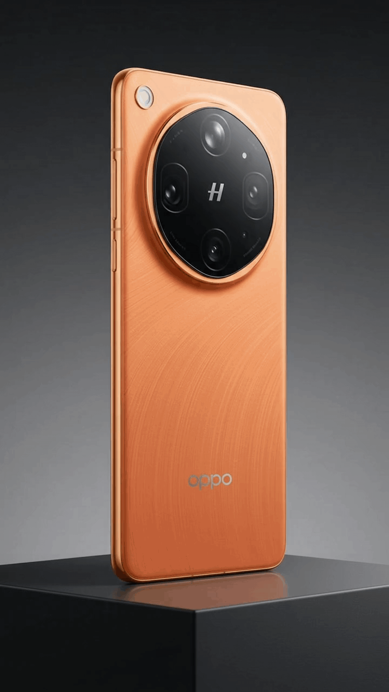

Vista Dinámica 360°
OPPO Find X9 Ultra
El máximo exponente en fotografía profesional con teleobjetivo periscópico y diseño insignia.



Videotutoriales

Tope de Gama
Descubre sus innovaciones clave.

Magia del Teleobjetivo
Vende el poder del zoom óptico y retratos profesionales.
Vista Dinámica 360°
OPPO Find X9 Pro
Potencia extrema, fotografía maestra y diseño en movimiento de 360°.


Vista Dinámica 360°
OPPO Find X9
Elegancia compacta de gama alta con sistema de cámaras de nivel profesional.

Vista Dinámica 360°
OPPO Find X10 Pro Max
Vitrina 360° de nueva generación con tecnología insignia OPPO.

Vista Dinámica 360°
OPPO Find X10
Explora cada ángulo del diseño Find X10 en alta definición.